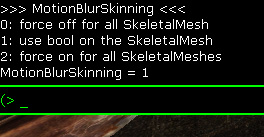

UDN
Search public documentation:
MotionBlurSkinningCH
English Translation
日本語訳
한국어
Interested in the Unreal Engine?
Visit the Unreal Technology site.
Looking for jobs and company info?
Check out the Epic games site.
Questions about support via UDN?
Contact the UDN Staff
日本語訳
한국어
Interested in the Unreal Engine?
Visit the Unreal Technology site.
Looking for jobs and company info?
Check out the Epic games site.
Questions about support via UDN?
Contact the UDN Staff
运动模糊植皮后期处理特效功能
 |
| 向不同方向移动的身体部分显示不同的运动模糊方向和强度。 |
概述
 |
| 左侧: 启动该功能 中间： 禁用该功能 右侧： 显示为颜色的每个像素速度。 |
激活该功能
|  |
| 当使用 MotionBlurSkinning命令时的反应。 |
设置骨架网格物体标志

实现
骨骼数量限制
因为我们使用1维的贴图来存放骨骼数据，所以在骨骼数量上有一些限制。我们目前使用宽4096的贴图，每个骨骼需要存储3个贴图像素。请使用 stat SceneUpdate 命令来查看这个限制是否影响您。我们仅对附近的对象进行运动模糊处理，对于我们使用的骨骼数量来说，我们并没有把这个当成问题来看待。注意，脸部动画的运动模糊通常不需要!MotionBlurSkinning功能。着色器变换
无论是具有植皮运动模糊还是没有运动模糊植皮功能，我们都尝试避免着色器变换。这会保持代码复杂度较低并且一般会具有较少的着色器。我们决定使用静态分支(和一个布尔着色器常量比较)，因为这解决了问题并且经过了驱动程序优化。 在 Xbox360上，我们使用静态分支来避免着色器变换。我们验证确定这和编译出来的一样快。但其他的平台还没使用这个方法(请参照优化部分)。性能
CPU数据更新
植皮运动模糊的CPU消耗不像从先前帧中存储的用于后续帧的数据的性能消耗那样高。因为我们仅是增减双倍的缓存,所以贴图锁定操作是应该不会延迟，但是请确保我们在这上面有一个 stat(统计数据) 。通过使用控制台命令 stat SceneUpdate ，您可以参看这个数值。  |
| 统计数据显示了锁定的CPU事件及已经更新的骨骼数量。 |
更多的描画函数
运动模糊的对象需要在速度渲染那遍进行渲染(以便存储每个像素的运动模糊向量)。如果非植皮运动模糊，我们仅在有对象运动时需要进行这个处理。为了测试植皮对象是否运动，我们需要检测更多的数据。我们还有对此进行优化。这个处理可以完成，但是对于具有很多运动对象的最糟糕的情况，这没有什么作用。 那意味着当为一个没有运动的对象启用运动模糊时(比如，不移动的机器人)，现在就要渲染它并且需要添加更多的描画函数。顶点贴图获取的GPU消耗
当前的方法需要把12个顶点贴图取入到一个非常大的顶点格式中(一个4x3的骨骼矩阵需要4个浮点数，需要对4个骨骼进行植皮)。这意味着需要渲染更多的顶点，渲染速度会更慢。使用这种方法仅渲染附近的对象(速度渲染那遍)，所以渲染器的性能消耗会由于大量的邻近动作而加剧。 当在Xbox360(具有变形顶点的浓密的三角形网格物体)上优化速度渲染时， 我们注意到渲染速度比刚体运动模糊慢60%（所有的对象都移动了，从而不能进行跳跃渲染）。内存

不同平台上的支持
优化：
- 在Xbox360上，可以使用"vfetch"功能而不是使用顶点贴图获取功能。
- 我可以在每个顶点上进行小于4次的骨骼查找(降低了质量但是是可以接受的)。
- 我们可以在运行时检查bPerBoneMotionBlur，以便当它知道对象没有运动时可以禁用游戏代码(很简单但是需要处理游戏代码)。
- 在PC和Playstation 3上使用静态分支。由于有个引擎bug所以我们还不能使用它。作为一个解决方案，我们可以判断浮点数的状态来禁用那个功能(这意味着非植皮对象在速度渲染时着色器性能消耗代价很大)。
- 目前即时仅使用了部分贴图，我们也会锁定整个贴图。
- 通过把所有的骨骼和之前的骨骼比较来测试是否需要速度渲染。
有用的控制台命令
-
MotionBlurSkinning - 如上所描述的。